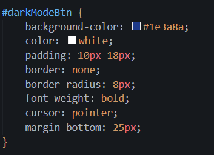

HTML, CSS and JavaScript Lab
Section 1: External CSS File
I used an external CSS file called styles.css to control the appearance of my website. This file changes the background colour, text style, navigation bar, content box, image sizing and dark mode styling.
The CSS file is linked to each HTML page using the link tag inside the head section. This means the same styling can be used across multiple pages.
<link rel="stylesheet" href="styles.css">


Section 2: External JavaScript File
I created a separate JavaScript file called script.js. This file is linked at the bottom of my HTML pages using the script tag.
The JavaScript adds interactivity to the website by allowing the user to toggle dark mode.
<script src="script.js"></script>


Section 3: Using IDs and Classes
I used an ID called darkModeBtn for the dark mode button. This allows JavaScript to find the button using getElementById.
I also used a CSS class called dark-mode. When this class is added to the body element, the colours of the page change to dark mode.
#darkModeBtn {
background-color: #1e3a8a;
}
.dark-mode {
background-color: #111827;
}


Section 4: Navigation Bar
I created a navigation bar using the nav tag and hyperlink tags. This allows users to move between the individual lab pages without manually opening each file.
<nav>
<a href="index.html">Home</a>
<a href="github-cicd-1.html">GitHub & CI/CD 1</a>
<a href="github-cicd-2.html">GitHub & CI/CD 2</a>
<a href="html-css-js.html">HTML/CSS/JS</a>
</nav>

Section 5: Dark Mode Toggle
I added a dark mode button to the website. When the button is clicked, JavaScript toggles the dark-mode class on the body element. I also used localStorage so that the dark mode setting stays active when moving between pages.
const darkModeButton = document.getElementById("darkModeBtn");
if (darkModeButton) {
darkModeButton.addEventListener("click", function () {
document.body.classList.toggle("dark-mode");
});
}

Reflection
This lab helped me understand how HTML, CSS and JavaScript work together. HTML gives the website structure, CSS controls the appearance, and JavaScript adds interactivity.
This could be used in industry because websites are usually built with separate files for structure, styling and behaviour. This makes the code easier to maintain, update and reuse across different pages.